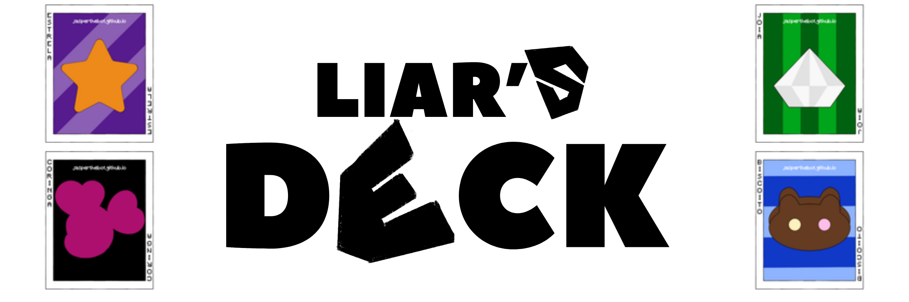
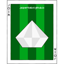
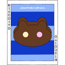
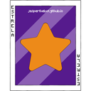

➥
Liar's Deck é meu mini-game de cartas e mentira, inspirado no modo de mesmo nome do
Liar's Bar, que estourou no lançamento
em 2024. Dá pra jogar com até
4 pessoas por partida, direto no canal de texto do seu servidor.
➥ Segue um pequeno tutorial de como funciona uma partida:
1. Use /liars play pra criar uma partida e esperar a galera entrar. O
limite é de 4 jogadores, igual no jogo original.
2. Ao iniciar, eu distribuo o baralho. Ele tem quatro naipes:

joias,

biscoitos,

estrelas e
coringas. Cada jogador recebe
5 cartas por padrão, mas quem
cria a partida
pode mudar isso.
Os três primeiros são naipes normais. O
coringa é curinga de verdade: vale no
lugar de qualquer um
dos outros.
3. A cada round a mesa pede um
naipe específico. Na sua vez, você joga uma carta daquele
naipe... ou não.
Minta! Ninguém vê o que você jogou de verdade, a não ser que alguém duvide.
4. Você pode duvidar de quem jogou antes de você, e quem vem depois pode duvidar de você. Quando há
um questionamento, a carta é virada:
▸ Se você mentiu,
você come um
donut.
▸ Se você estava falando a verdade,
quem duvidou come um
donut.
5. Todo mundo começa com
3 donuts e é obrigado a comer um ao perder
um confronto. O problema é
que
um deles está envenenado, e você não sabe qual.
6. Comeu o
donut envenenado, você morre e está fora da partida. Comeu um
bom, segue o jogo. A partida
acaba quando sobra
um sobrevivente.
7. Fique de olho no tempo: se alguém deixar uma interação da partida parada por mais de
5 minutos, a partida é encerrada automaticamente.
➥ Você pode usar o comando
/liars help no Discord para revisitar essa mensagem!
➥ Espero que você aproveite! Qualquer dúvida, sinta-se livre para perguntar no meu
canal de suporte.
Publicado 7 de agosto de 2026. Dependendo da data de publicação, o texto
pode estar levemente desatualizado.